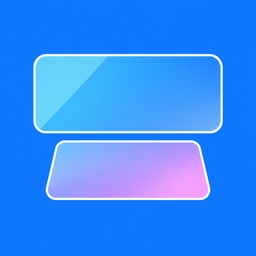
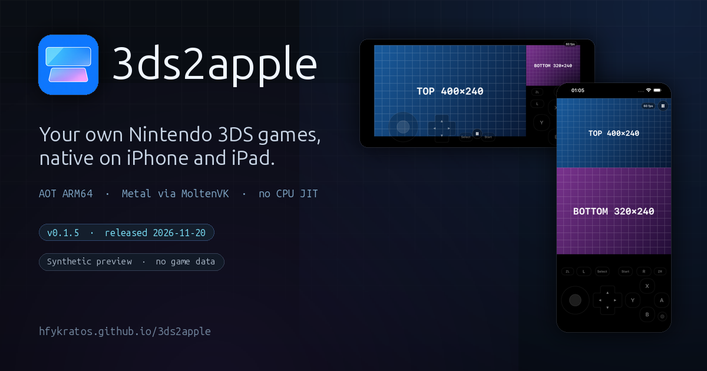
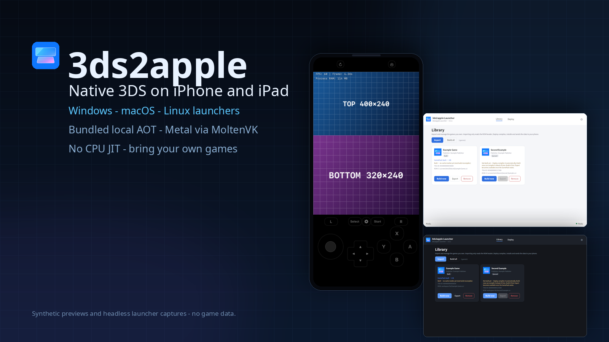
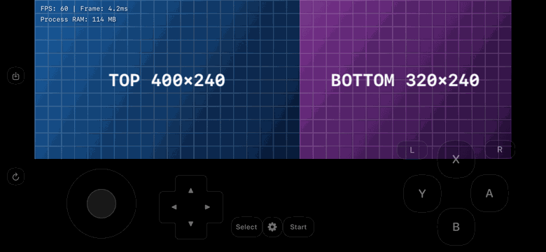
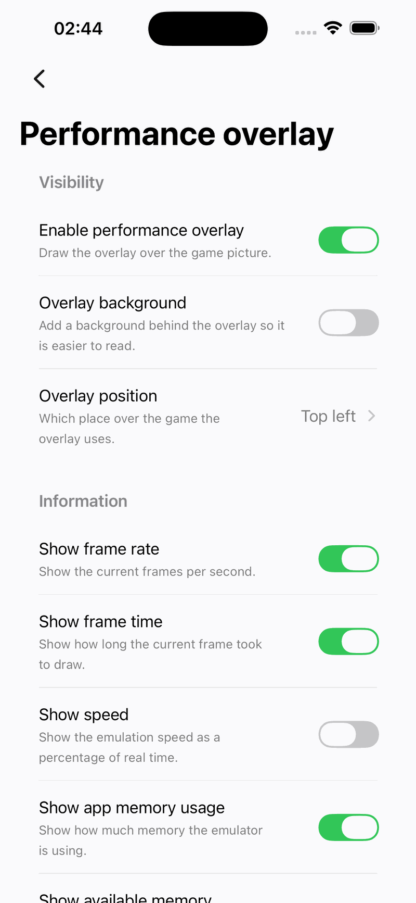
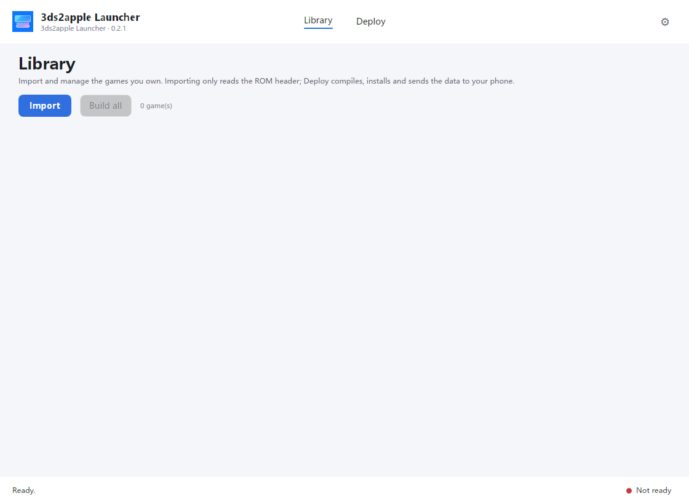
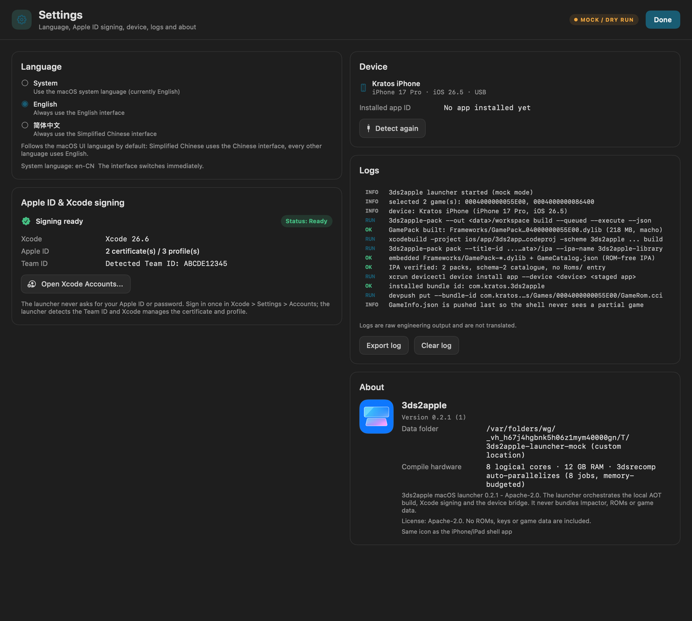

Media · press kit
Press kit
Everything needed to write about 3ds2apple: fact sheet, quote-ready descriptions in English and Simplified Chinese, release digests, logos, synthetic screenshots and a demo-video shot list.
Fact sheet
| Product | 3ds2apple |
|---|---|
| One-liner | Your own Nintendo 3DS games, running natively on iPhone and iPad. |
| Version | 0.2.1 — released 2026-11-25 |
| Platforms | iPhone / iPad on iOS 16+ · Windows 10/11 launcher · macOS 13+ launcher (Intel + Apple silicon) |
| Components | Windows launcher (C#/Avalonia, single executable) · macOS launcher (SwiftUI, Xcode signing) · iOS app |
| Rendering | Static recompilation to native ARM64; Metal through MoltenVK; the GPU presenter draws every screen layout — presets and custom rectangles — with zero per-frame readback |
| Highlights | iOS 26/27 grouped Settings; a default virtual-control layout from two Delta reference skins with the Settings button in the HOME slot; the Settings button can never be hidden; an Azahar-style performance overlay at the top edge of the picture; an in-game menu in the same iOS grouped language with a slide-up animation and native push/pop sub-pages; landscape Large / Side by side / Hybrid layouts flush to the top edge, with SAVE/LOAD beside the notch |
| No JIT | No CPU JIT and no interpreter fallback on the phone — AOT only |
| Licence / price | Apache-2.0 · free and open source |
| Downloads | GitHub Releases (two platform zips, no game data) |
| Website | hfykratos.github.io/3ds2apple |
| Requirements | A decrypted 3DS ROM the user legally owns and dumped; Developer Mode; USB cable; the user's own Apple ID for signing |
| Not included | No games, ROMs, decryption keys, BIOS, system files or game assets. Delta-style skin import, cheats, a manual viewer, amiibo, microphone, camera and network/online features are not part of the app; CPU JIT / shader JIT / RPC / LLE settings do not apply to the AOT-only architecture |
| Affiliation | Not affiliated with, endorsed by or sponsored by Nintendo. Nintendo 3DS is a trademark of Nintendo Co., Ltd. |
| Press contact | GitHub Issues / Discussions (no press email) |
Descriptions
Short — English
3ds2apple is a free, open-source native port that recompiles your own Nintendo 3DS games to native ARM64 ahead of time and runs them on iPhone and iPad — Metal through MoltenVK, no CPU JIT, no interpreter fallback. Windows and macOS launchers handle import, compilation, signing, install and data push. The app has an iOS-style grouped Settings page, a default control layout from two Delta reference skins, an always-visible Settings button, an Azahar-style performance overlay at the top edge of the picture and top-aligned landscape layouts. Bring your own legally owned, dumped games. Version 0.2.1, Apache-2.0.
Short — 简体中文
3ds2apple 是一款免费开源的原生移植工具：它把你自有的 Nintendo 3DS 游戏提前重编译为原生 ARM64，直接运行在 iPhone 与 iPad 上——图形经 MoltenVK 走 Metal，没有 CPU JIT，也没有解释器兜底。Windows 与 macOS 启动器包办导入、编译、签名、安装与数据推送。App 采用 iOS 风格分组设置页，默认按键布局基于两份 Delta 参考皮肤，设置按钮不可隐藏，性能覆盖层贴在画面顶端，横屏布局也贴住画面顶部。请自备合法拥有并自行导出的游戏。当前版本 0.2.1，Apache-2.0。
Long — English
3ds2apple brings your own Nintendo 3DS games to iPhone and iPad as a native port, not an emulator. Each game is statically recompiled to C on your Windows or macOS computer, built into an ARM64 GamePack with a local LLVM or Apple clang toolchain, and executed natively on the phone through the Zakuro HLE runtime. Graphics take the Metal path via MoltenVK, and the GPU presenter draws every screen layout — presets and custom rectangles — with no per-frame screen readback. There is no CPU JIT and no interpreter fallback on the device.
One signed app holds the whole selected library: every game is its own GamePack plus a GameCatalog, and game data is pushed separately into the app's Documents folder, so adding or removing a title is a re-deploy and pushed data survives reinstalls. The on-screen pad is the complete New 3DS set — D-pad, A/B/X/Y, L/R, ZL/ZR, Start/Select, an analog Circle Pad and the C-stick — with in-game drag-to-edit layout, per-control visibility, 10–200% sizes and opacity from the pause menu. The app has an iOS 26/27 grouped Settings page and an in-game menu in the same language with native push/pop sub-pages, a default control layout from two Delta reference skins, an always-visible Settings button in the skins' HOME slot, an Azahar-style performance overlay at the top edge of the picture, and landscape layouts flush to the top edge with SAVE/LOAD beside the notch. It also includes true unlimited speed, Stable/Beta update channels, a full gamepad layer, per-application settings, Integer scaling and Screen aspect under Graphics. 0.1.6 added GPU custom screen layouts with four-way rotation and screen swap, the on-screen fast-forward / quick save / quick load / swap-screen buttons and the incremental Windows deploy; 0.1.5 introduced the full-bleed view, the six landscape / three portrait layouts and the Virtual controls card. The Windows launcher is the verified path; the macOS launcher is a developer preview. 3ds2apple is free and open source under Apache-2.0, ships no ROMs, keys, BIOS or game assets, and is not affiliated with Nintendo.
Long — 简体中文
3ds2apple 以原生移植而非模拟器的方式，把你自有的 Nintendo 3DS 游戏带到 iPhone 与 iPad。每款游戏先在 Windows 或 macOS 电脑上被静态重编译为 C，再由本机 LLVM 或 Apple clang 工具链编译成 ARM64 GamePack，最后通过 Zakuro HLE 运行时在手机上原生执行。图形经 MoltenVK 走 Metal，所有屏幕布局（预设与自定义矩形）由 GPU presenter 绘制，每帧零屏幕回读；手机端没有 CPU JIT，也没有解释器兜底。
一个已签名 App 装下你选定的整个游戏库：每款游戏是独立的 GamePack 加 GameCatalog，游戏数据单独推送到 App 的 Documents 目录，因此增删一款游戏只需重新部署，已推送的数据在重装后仍然保留。屏幕上的虚拟按键是完整的 New 3DS 键位——十字键、A/B/X/Y、L/R、ZL/ZR、Start/Select、真模拟量 Circle Pad 与 C 杆——并可在暂停菜单里游戏内拖动编辑布局、逐键显隐、调整 10%–200% 的大小与透明度。App 采用 iOS 26/27 分组式设置页，游戏内菜单使用同样的分组语言并支持原生 push/pop 子页；默认按键布局基于两份 Delta 参考皮肤，设置按钮固定显示在皮肤 HOME 槽、不可隐藏；Azahar 风格性能覆盖层贴在画面顶端；横屏布局贴住画面顶部，SAVE/LOAD 位于刘海旁。此外还包括真正无限制速度、Stable/Beta 更新通道、完整手柄层、按游戏设置，以及图形设置中的 Integer scaling 与 Screen aspect。0.1.6 已带来 GPU 自定义屏幕布局（四种旋转与屏幕交换）、屏幕上的快进/快速保存/快速读取/交换屏幕按钮与 Windows 增量部署；0.1.5 已带来全屏游戏画面、横向六种与纵向三种屏幕布局，以及「虚拟按键选项」卡片。Windows 启动器是已验证路径；macOS 启动器为开发者预览。3ds2apple 以 Apache-2.0 免费开源，不附带 ROM、密钥、BIOS 或游戏资源，与 Nintendo 无隶属关系。
Both long descriptions are also included as separate files in the media kit (description-long-en.md, description-long-zh.md).
Key features
- Native AOT, not emulation: each game is statically recompiled to C, built into an ARM64 GamePack and run natively; no CPU JIT, no interpreter fallback.
- Metal via MoltenVK: the PICA200 GPU path is translated to Metal; the GPU presenter draws every screen layout — presets and custom rectangles — with zero per-frame screen readback.
- One app, whole library: one signed app holds every selected game and catalog; only
GameRom.cci+GameInfo.jsonare pushed into Documents. - Full New 3DS controls: D-pad, A/B/X/Y, L/R, ZL/ZR, Start/Select, analog Circle Pad and C-stick, plus a gamepad layer — analog deadzone, physical button remapping, 2–4 button hotkeys, Standard/High contrast controls and per-app profiles.
- Default control layout (0.2.1): ModernFS portrait / ModernHybrid landscape geometry from two Delta reference skins, with the HOME slot as the Settings button and SAVE/LOAD beside the notch.
- Always-visible Settings (0.2.1): the in-game menu button can never be hidden; Toggle controls no longer lists it and an old hidden set is cleaned up on load.
- Azahar-style performance overlay (0.2.1): frame rate, frame time, speed, app memory and available memory at the top edge of the picture in six places, each line switchable.
- Top-aligned landscape layouts (0.2.1): Large screen, Side by side and Hybrid sit flush to the top edge with the black band gone.
- Grouped Settings (0.2.0): iOS 26/27 inset-grouped pages — General, System, Gamepad, Graphics, Layout, Sound, Debug and Other — with inline titles and two-line descriptions.
- Redesigned in-game menu (0.2.0): Save state, Virtual controls, Screen layout, Swap screens, Rotate screen, Global / Per-Application Settings and Close game, with native push/pop sub-pages and the game name in the header.
- True unlimited speed (0.2.0): turn off Run speed limit or Turbo limit to remove the 4× cap; Default and Turbo speed are 1×–4×, with heat / battery / audio-muted warnings.
- Update channels (0.2.0): Stable or Beta GitHub checks, at most one background check per 24 hours, and a local notification when a new release appears.
- Gamepad layer (0.2.0): analog deadzone, physical button remapping, 2–4 button hotkey recording, Standard / High contrast on-screen controls and per-app Gamepad profiles.
- Per-Application Settings (0.2.0): per-title-ID overrides for screen rotation, swap, Integer scaling, Screen aspect, deadzone, control appearance and button mapping.
- Graphics options (0.2.0): Integer scaling and Screen aspect (Fit / 4:3 / Stretch) under Graphics; the read-only Renderer row is gone.
- Virtual controls and layouts (0.1.5–0.2.1): show/hide with the Settings button always visible even when the pad is hidden, haptics, drag-to-edit layout, 10–200% size and opacity; Fast-forward, Quick save, Quick load and Swap screens as editable buttons; six landscape and three portrait screen layouts, with GPU custom rectangles that support four-way rotation and screen swap.
- Incremental Windows deploy (0.1.6): the launcher reads the phone first; an update overwrite-installs without losing Documents or saves, pushes only missing data and never deletes phone-only game data.
- Full-bleed game view: no title bar, card border or game name; only the performance overlay and the floating controls sit over the picture, with the Settings button in the skins' HOME slot.
- Save states and diagnostics: pause-menu save/load and a manual diagnostics export with frame timings, stutter counters and both app logs.
Release assets
| Asset | Size | SHA-256 |
|---|---|---|
| 3ds2apple-0.2.1-windows-x64.zip | 157,852,006 B (157.9 MB) |
627ad2af9feaa55c2651b31977d808b9bb7da38abe970430a7df8db8223e72ed |
| 3ds2apple-0.2.1-macos-universal.zip | 5,532,772 B (5.53 MB) |
dd5b62c4a9cc099eb168d4cce501698c88274c9c4519d9f3d896449550572bf4 |
Each zip carries LICENSE, NOTICE and THIRD_PARTY.md at its root. The Windows launcher is the verified path; the macOS launcher is a developer preview (issue #1). Never attach game data to coverage as if it were part of the project.
Logos & screenshots


















All images are project-owned synthetic media: the app previews are a Simulator test harness (blue/purple grids labelled TOP 400×240 and BOTTOM 320×240), and the launcher screenshots use the built-in synthetic demo entries. No commercial game art, names or logos. Provenance of every file: CREDITS.md (also inside the media kit).
Demo video
Not recorded yet — there is no video URL
The maintainer will record a short demo video later. Until it exists, there is no official video link, and no placeholder should be published as if it were the video. The shot list below is the plan to record against; it is also shipped as demo-video-shot-list.md in the media kit.
- 0:00–0:08Title card. Icon, wordmark, "native ARM64 · Metal via MoltenVK · no CPU JIT".
- 0:08–0:22Windows launcher: import. Library → Import with a synthetic ROM fixture; no game content shown.
- 0:22–0:40Windows launcher: deploy. Compile GamePacks → compose/sign/install the IPA → push the game data.
- 0:40–0:58iPhone portrait gameplay. Full-bleed grid preview, top-edge performance overlay, controls below the picture with the HOME-slot Settings button, single-cross D-pad press.
- 0:58–1:12Pause → Virtual controls. Toggle controls, size 100%→150%, opacity, Edit layout drag, centred Done.
- 1:12–1:26Screen layouts. Settings → Display → Screen layout: cycle the six landscape presets, then Custom with live preview.
- 1:26–1:38Portrait layouts + C-stick. Default / Original / Custom; show the portrait control band and C-stick.
- 1:38–1:50Launchers + library. macOS launcher empty state, then a populated synthetic library.
- 1:50–2:00Outro. GitHub repo, releases, Apache-2.0, "bring your own games", "not affiliated with Nintendo".
Recording rules: 16:9, 1080p or 4K, 1:50–2:00, no commercial game footage or names, no ROM/BIOS/key content, no device UDID or Apple ID on screen, captions state "synthetic preview".
Press FAQ
Is 3ds2apple an emulator?
No. It is a native port: each game's code is statically recompiled to C, built into an ARM64 GamePack and executed natively through the Zakuro HLE runtime. There is no CPU emulator, no CPU JIT and no interpreter fallback. Do not describe it as an emulator.
Does it ship games, ROMs or keys?
No. It ships launchers, an iOS app and documentation only. No ROMs, decryption keys, BIOS, system files or game assets are included or provided, and there is no ROM download or piracy support. Users must supply their own legally owned, self-dumped, decrypted games.
Which platform is verified?
The Windows launcher is the verified path. The macOS launcher is a developer preview: the package is not self-contained yet and real-device installation is unverified (issue #1). Please state that distinction.
Do I need a jailbreak?
No. The app is signed with the user's own Apple ID (bundled official Impactor on Windows, Xcode automatic signing on macOS) and installed with Developer Mode enabled. A free Apple ID allows 3 apps per device and about 7 days of signing; re-deploy to refresh.
Does it collect data?
No. No analytics, no accounts, no network requests and no trackers. Diagnostics are exported manually by the user. The site likewise uses no cookies, analytics or CDN.
Is the demo video available?
Not yet. It will be recorded by the maintainer; see the shot list above. There is no video URL at this time — please don't publish a placeholder as if it were the video.
Where do I get the media assets?
media-kit.zip (2.36 MB) contains all text, logos, hero/OG images, the demo GIF and 16 screenshots. Every image is synthetic and project-owned; see CREDITS.md.
Legal
Not affiliated with Nintendo
3ds2apple is an independent, open-source project. It is not affiliated with, endorsed by or sponsored by Nintendo. Nintendo 3DS is a trademark of Nintendo Co., Ltd. All other trademarks belong to their respective owners.
No Nintendo ROMs, decryption keys, BIOS, system files, fonts, game assets, gameplay screenshots or signed IPAs are included or provided. Only decrypted games that the user legally owns and dumps themselves are supported. The project provides no ROM download or piracy support.
The source code is licensed under Apache-2.0; third-party components are listed in THIRD_PARTY.md and NOTICE. Press may reuse the project-owned synthetic images unmodified with credit to "3ds2apple (HFYKratos)", without implying endorsement.
Contact
Media contact is GitHub Issues and Discussions at github.com/HFYKratos/3ds2apple. There is no press email address; please open an issue for interview or asset requests.
For technical reports, the repository's CONTRIBUTING.md explains what to include — and warns that ROMs, keys, BIOS, generated C, signed IPAs and screenshots with game art must never be attached.